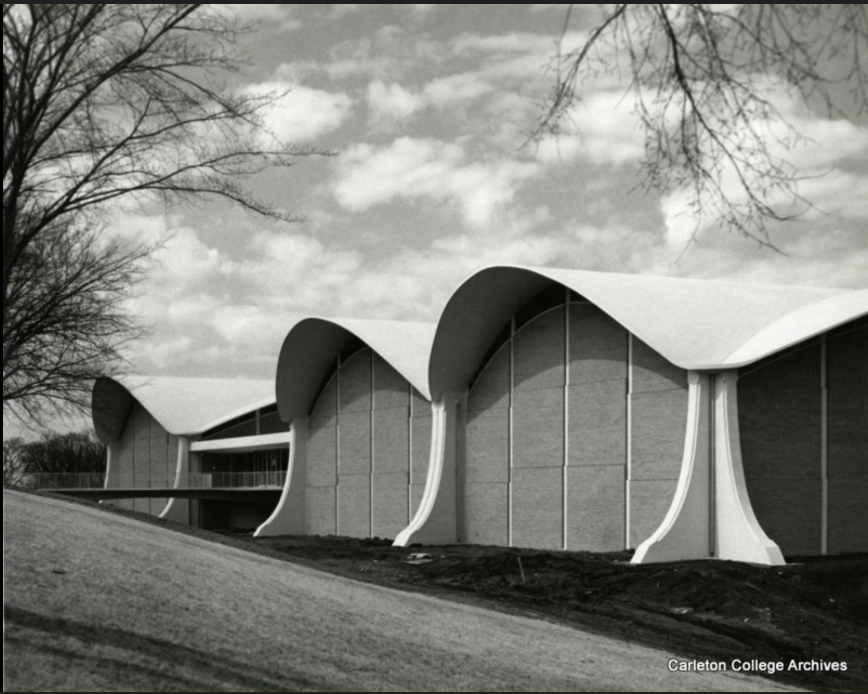

West Gymnasium was built by Minoru Yamasaki in 1964. Following World War 2, there was an emphasis on building for the future and not calling back to the past. Yamasaki is known for his taste in Humane Modernism, and West Gym is one such example. The shell roof of reinforced concrete seems to fly above the beige brick walls.

Humane Modernism was an architectural movement that took the harsh elements of Modernist architecture, and incorporated empathy, user comfort, and responsibility within it. West Gym attempts to incorporate humanity through its soft and unconventional design sensibilities - namely the shell roof and large windows. West Gym is a part of Carleton’s “Modern” era of architecture.
Check out this digital humanities project about West Gym’s most important feature: The Thorpe Pool (definitely no bias here as a swimmer…)
← Back to Map